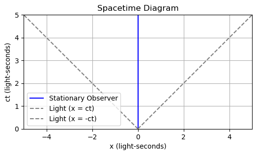
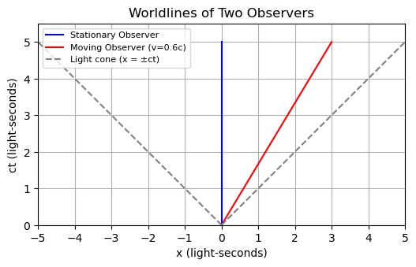

A3.6 Spacetime Diagrams#
A3.6.1 Introduction#
A spacetime diagram is a geometric tool used to visualize how different observers perceive events in space and time. They help us build intuition for:
Time dilation
Length contraction
Relativity of simultaneity
Light cones and causality
We typically plot position \(x\) on the horizontal axis and time \(ct\) on the vertical axis.
To combine time and space units, we multiply time by \(c\), so that both \(x\) and \(ct\) have units of length (e.g., light-seconds).
A3.6.2 Worldlines#
A worldline is the history of a particle or observer.
A stationary observer stays at fixed \(x\): vertical worldline.
A moving observer has a sloped worldline: \(v = \frac{x}{t}\).
A photon travels at \(c\), so its worldline has a \(45^\circ\) angle: \(x = \pm ct\).
Note on Units: Why Set \(c = 1\)?
In spacetime diagrams, we typically use natural units where \(c = 1\). This lets us plot time and space on the same scale (e.g., light-seconds or meters for both).
✅ Benefits of setting \(c = 1\):
The light cone always lies at \(45^\circ\) (\(x = \pm t\))
Relativistic equations like \(\gamma = \frac{1}{\sqrt{1 - v^2}}\) become simpler
Velocities can be read from the inverse slope of worldlines: $\( v = \frac{x}{t} = \frac{1}{\text{slope}} \)$
This is a visual and mathematical convenience. For physical predictions, we still use \(c = 3 \times 10^8\) m/s when needed.
Below we draw a spacetime diagram for a stationary observer and timeline for light.

Interpreting the Moving Observer’s Worldline#
In a spacetime diagram drawn in the stationary frame, the \(t'\) axis corresponds to the worldline of the moving observer. This is the path through spacetime of someone moving at constant velocity \(v\).
To find the equation for the \(t'\) axis, recall the Lorentz transformation:
The \(t'\) axis represents all events that occur at \(x' = 0\), meaning we solve:
This line passes through the origin and has slope \(v\). It shows how time flows for the moving observer in the stationary frame — it’s where their clock ticks.
In the diagram below, we add a second worldline for an observer moving at velocity \(v = 0.6c\).
Because we’ve chosen units where \(c = 1\), this means:
and the slope of the worldline is: $\( \text{slope} = \frac{t}{x} = \frac{1}{0.6} \approx 1.67 \)$
A steeper slope corresponds to a slower velocity.
A shallower slope (closer to horizontal) means a faster object.
This is why:
The stationary observer has a vertical worldline (infinite slope, \(v = 0\)).
The moving observer has a tilted worldline with finite slope (less than vertical).
The light cone always lies at \(45^\circ\) — slope 1, because \(x = t\) when \(v = c\).
We now plot the \(t\) and \(t'\) axes together to visualize this geometry.
🐍 Jupyter Code Cell

A3.6.3 Light Cones and Causality#
Each event in spacetime has a light cone:
Future light cone: all events that can be reached by signals traveling \(\leq c\).
Past light cone: events that could influence the current event.
Anything outside the light cone is spacelike separated — it cannot influence or be influenced.
This enforces causality:
No information or matter can travel faster than light.
A3.6.4 Summary#
Concept |
Description |
|---|---|
Worldline |
Trajectory of an object in spacetime |
Simultaneity |
Relative — depends on observer’s motion |
Time Dilation |
Moving clocks tick more slowly |
Length Contraction |
Moving objects appear shorter |
Light Cone |
Causal structure of spacetime |